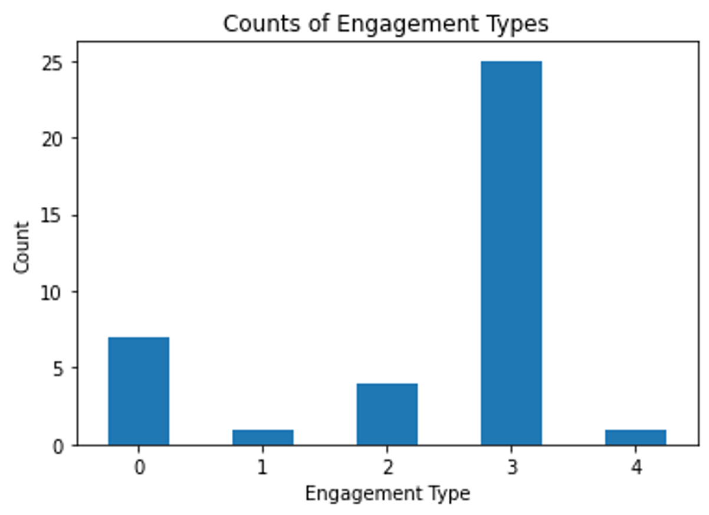

Results
After recording a total of 105 guests, we found that engagement was very high with all the light field displays. As shown in Figure 4, the displays mostly got a 3 in engagement type. However, the interactive light field displays gained much more dwell time(as seen in Figure 5). Our second iteration recorded 149 visitors. Each visitor spent an average 27.9 seconds in the gallery and interacted with our display for an average of 18.4 seconds. While we did see a lot more guests with 0 interaction, we also saw an increase in the higher types of interactions (4 and 5) when they did interact with it. We also found some obstacles to overcome in order to make widespread deployment more practical. The placement of the displays are reliant on the amount of power in that area, as each interactive display needed power for itself and the computer it was attached to. Furthermore, the location of the displays also had to put the displays around sight-level, as the different views could only be displayed on a specific vertical tilt.
First Iteration Results
|  |